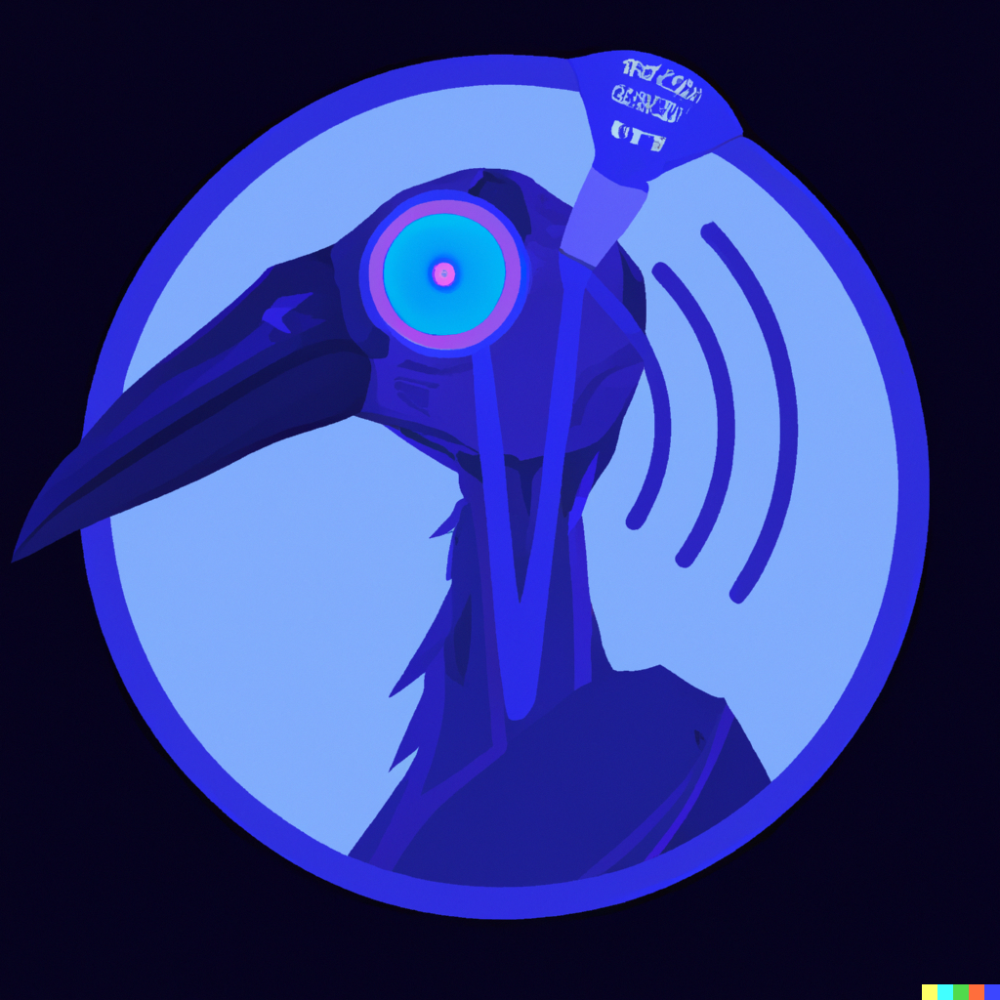

Ibis Birdbrain
Getting started
Installation and setup
Tutorial: CLI
Tutorial: Python
Concepts
Why Ibis Birdbrain?
Large language models
LLMOps, MLOps, DevOps
Data and AI platforms
User interfaces
Posts
Source code
Report an issue
Ask for help
Categories
All
(5)
LLMs and data
(5)
Posts
Order By
Default
Title
Date - Oldest
Date - Newest
Author
Auxiliary tools
LLMs and data
As a product manager, I don’t spend most of my time managing products. I suspect most data developers (analysts, engineers, scientists, etc.) don’t spend most of their time…
Cody Peterson
Oct 16, 2023
Composable data + AI systems
LLMs and data
When writing (data and AI) code, it’s important to use the right abstraction for your job to be done. A modular and composable data and AI system is easier than ever with…
Cody Peterson
Oct 15, 2023
Computations and control flow: it’s just programming
LLMs and data
The recent Generative AI hype cycle has led to a lot of new terminology to understand. In this post, we’ll cover some key concepts from the groud up and explain the basics…
Cody Peterson
Oct 14, 2023
Three approaches
LLMs and data
The thought of using natural language to transform and analyze data is appealing. This post assumes familiarity with Marvin and Ibis – read the previous post in the series…
Cody Peterson
Oct 13, 2023
An introduction to Marvin and Ibis
LLMs and data
In this “LLMs and data” series, we’ll explore how to apply large-language models (LLMs) to data analytics. We’ll walk through the steps to build Ibis Birdbrain.
Cody Peterson
Oct 12, 2023
No matching items
Back to top